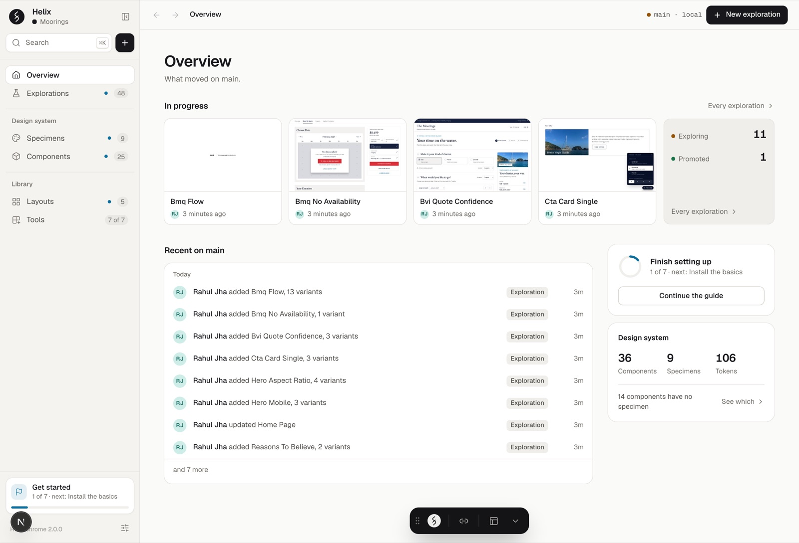
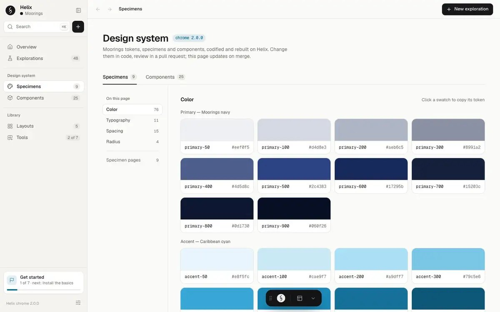
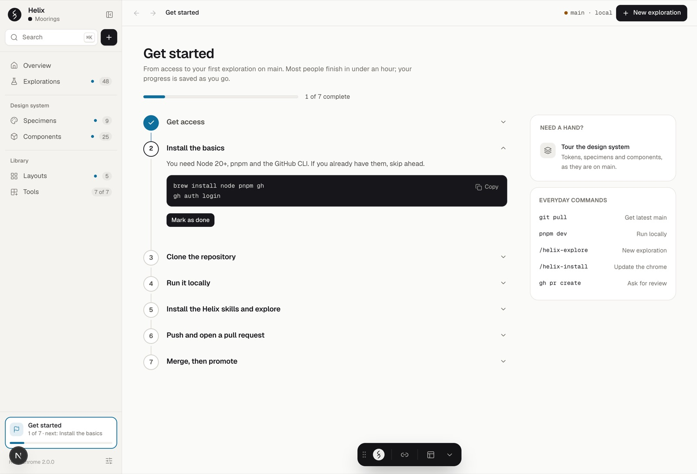
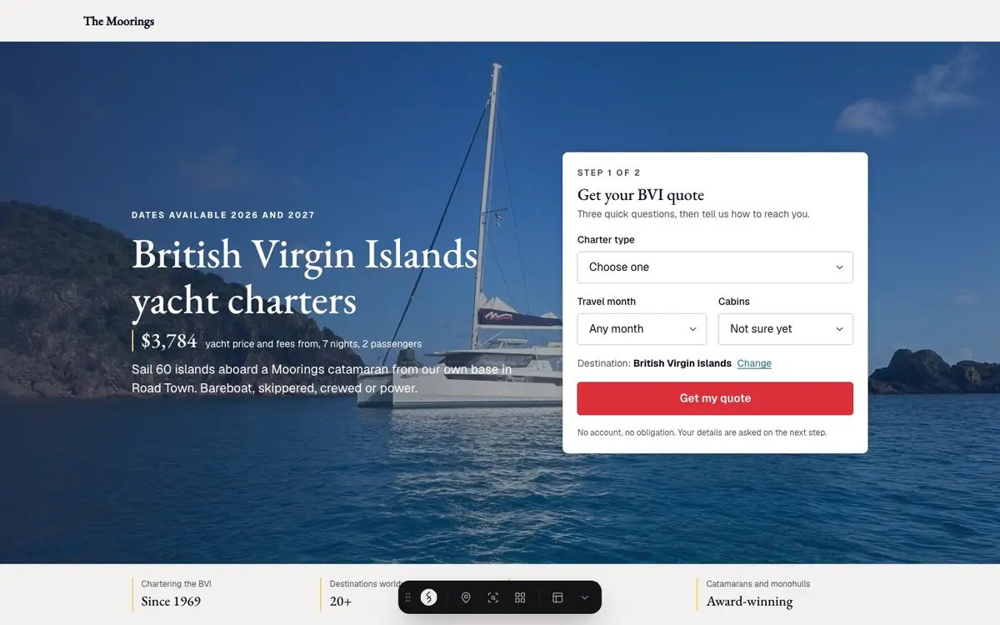
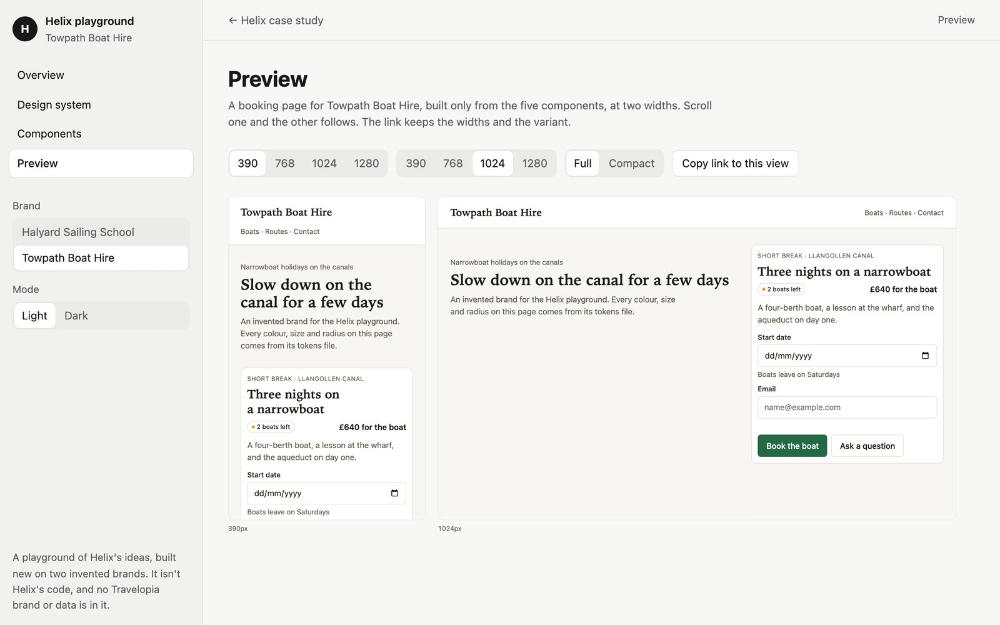
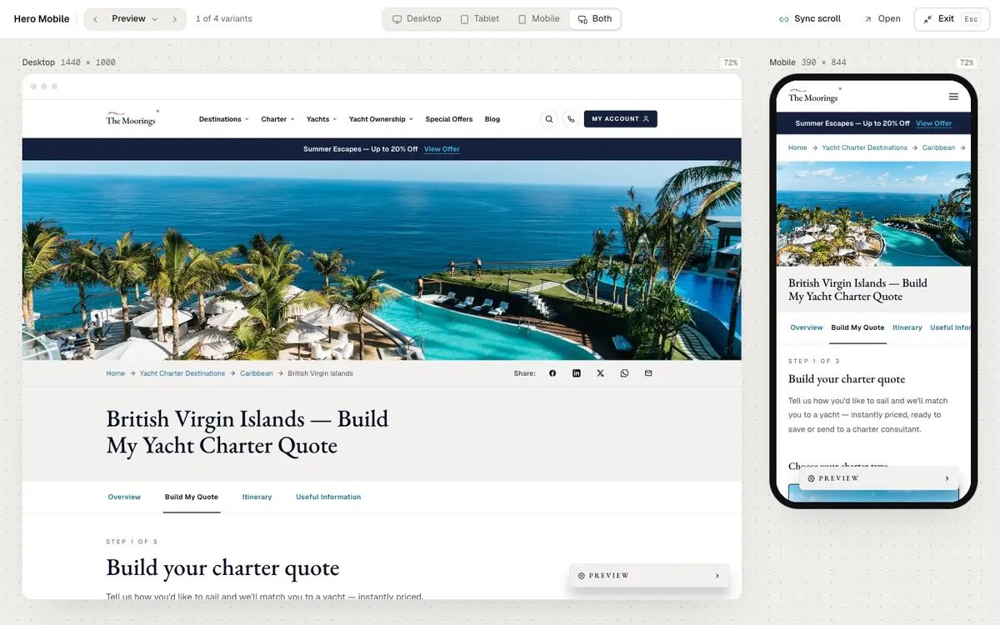
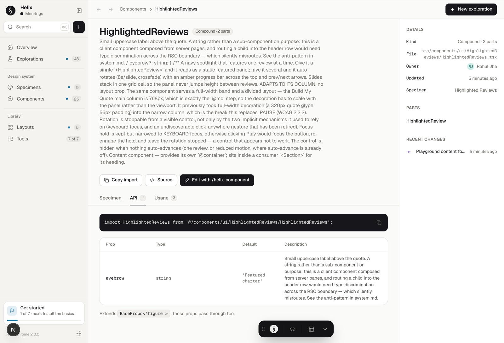

Helix
One place where each brand's design system lives as working code, so a designer can ship real screens instead of handing over pictures.
I'm a designer at Travelopia, a group of travel brands: yacht charters, canal holidays, adventure trips. Each brand has its own website, and almost every brand has one designer. I built Helix so those designers could design in the brand's real code, review it together, and ship it themselves.

The problem
Before Helix, a design was a picture. A designer drew a screen, handed it to an engineer, and the build slowly drifted from the picture. Each brand kept its design system somewhere different, and with one designer per brand, nobody had time to keep it in step with the code.
Even reviewing cost money. Leaving a comment on a preview needed a paid seat, $205 each, for anyone who wanted to say "move this 8px". So feedback came back as email instead.
1. A workspace that reads the brand's own code
Helix installs into a brand's website code and shows what is already there. Folders become navigation. Every component, layout and exploration is a link anyone can open, with nothing to install.
Helix holds no brand of its own. It reads each brand's colour, type and spacing straight from that brand's stylesheet, every time the page loads. There is nothing to publish and nothing to keep in step, so the page cannot tell you something the code does not. A new brand is an install, not a project.

2. Designers onboard in under an hour, then ship
A designer joining a brand gets a Get started page: seven steps, progress saved as they go, and the first command is a skill that does the setup. From getting access to their first exploration (a working page in the brand's real code) merged into the live branch takes under an hour.
From there they ship the pull requests themselves. In six months, 290 changes were merged across the brand repositories, from sixteen people, most of them merged the day they opened. Designers who used to hand over pictures now hand over code.

3. Skills that build the system with you
Written rules go unread at the moment they matter. A skill is the same rules, loaded at that moment. Helix has fourteen, for Claude Code and OpenCode from one source: one reads an existing brand and sets it up, one starts a brand from nothing, one promotes a finished exploration into a real component.
One rule cannot be skipped: the design audit and the accessibility check load with every build, wherever the work starts.
Read about the Helix skills →4. A toolbar on the real page, open to contributions
Before, feedback was a screenshot in a chat thread, and the thread outlived the fix. So Helix puts the tools on the page itself: ten tools in one dock. Inspect names any component and the tokens it uses. Annotate pins a note to an element, with its component and file, and turns several notes into one prompt for the agent. Changes lists what moved, read from git.
Anyone can add a tool. A skill scaffolds it, checks it against the toolbar's rules and opens the pull request, so the tenth tool cost an afternoon.

5. Comments, brought in-house
Instead of paying $205 a seat, I built comments into Helix. A comment pins to the element, takes images and links, and needs one sign-in with your work address. Eight of the ten brand teams have switched it on; for a new brand that is one commit, three settings and a redeploy.
Under the hood it is a small backend of its own: a Postgres database, sign-in, server routes and file storage. The browser never holds a database key, and every read and write is scoped to one project and one page.
Read how comments are built →Try it: a playground on two invented brands
Helix lives in Travelopia's brand code, so you can't open it. The playground is the same ideas, built new on two made-up brands, a sailing school and a canal-boat hire. It isn't Helix's code, and no Travelopia brand or data is in it.
Switch brand and every page redraws from that brand's stylesheet. The design-system page has no content of its own, the props tables are read from each component's types, and the preview shows one booking page at two widths with scroll kept in step. The overview lists what needs fixing. It still flags one real thing: a highlight dot in the canal brand's dark mode that's 2.37:1, under AA.
It has 54 tests, including both brands' colours held to AA and every page checked with axe. Writing them found three bugs in the playground itself: a focus ring at 2.38:1, component summaries read from the wrong comment, and an image's fields listed as props of their own. This page passed a layout check before it went up: a script loads it at six widths, light and dark, and fails on overlaps, sideways scroll, clipped text and small tap targets.

Where the data said otherwise
- The first accent colour failed.The accent on Helix's original artboard measured 3.4 to 1 against its background, below the 4.5 needed to read as text. It was replaced rather than shipped. Every accent now comes as a pair that passes on every surface.
- Every review asked about the phone.Sign-off happens on a shared screen, and in nearly every call, four minutes in, somebody asked what it did on a phone. So the preview opens desktop and phone at once, at fixed widths, with scrolling kept in step and the width in the link.
- Fifty comments vanished.Each comment was filed under a project name worked out from git. A push from the command line carried no name, so about fifty comments fell through to a default. The fix was no guessing and no default: the name is set once, explicitly.
- The accessibility check was too slow.It was switched off once because builds took too long. Rather than lower the bar, I scoped the loop so it runs fast. It runs on every build and has never been lowered.

How it's built for engineers
- Next.js 16, React 19, Tailwind v4, installed into each brand's own Next.js repository. Nothing in the brand is rewritten or renamed.
- Tokens at request time. The design-system page parses the brand's token stylesheet on every request, so it can't drift from the build.
- Components document themselves. Props, defaults and notes are read off the TypeScript types and JSDoc. Owner, file and last change come from git.
- Exploration cards are screenshots taken by a headless browser after every merge.
- Comments: Postgres, Better Auth, server routes and object storage, mounted under one API path and dormant until a brand switches them on. Allowed email domains are enforced in the database, not the browser.

Where it stands
Live on ten brands. Nine have built their design systems in it, eight run comments, and sixteen people have shipped through it. The next brand is an install.